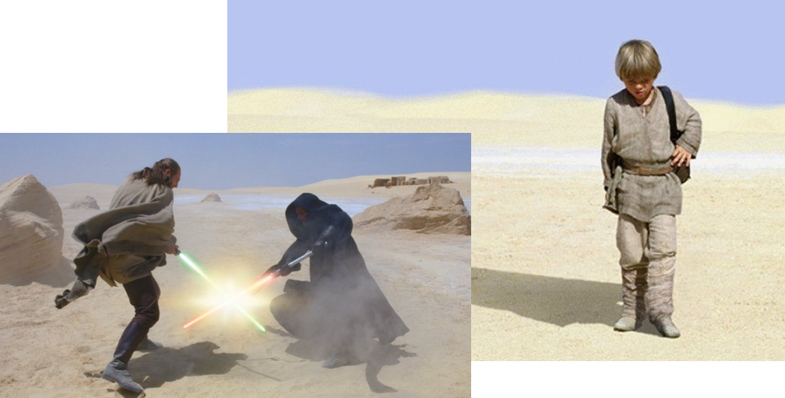

Intro
I
II
III
IV
V
VI
Open navigation
Your browser does not support the video tag.
scroll down
Section I content goes here 
Section II content goes here
Section III content goes here
Section IV content goes here
Section IV content goes here
Section IV content goes here